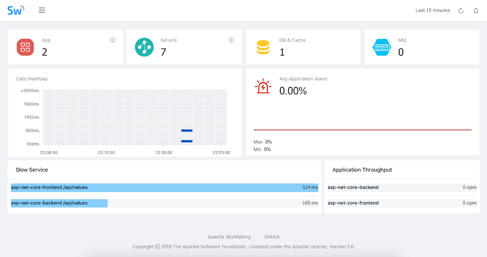
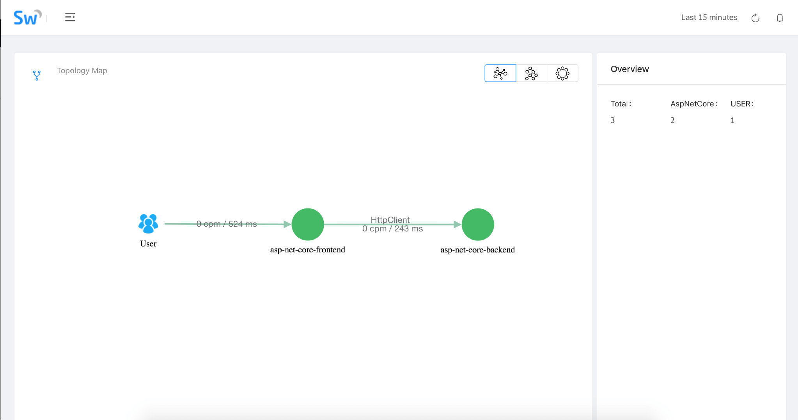
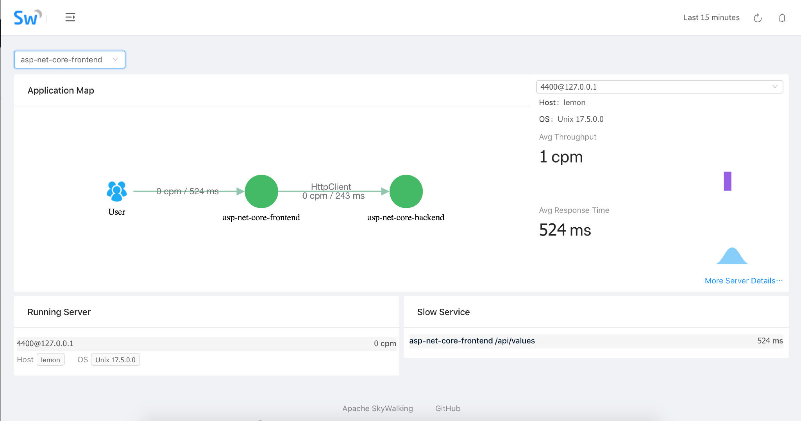
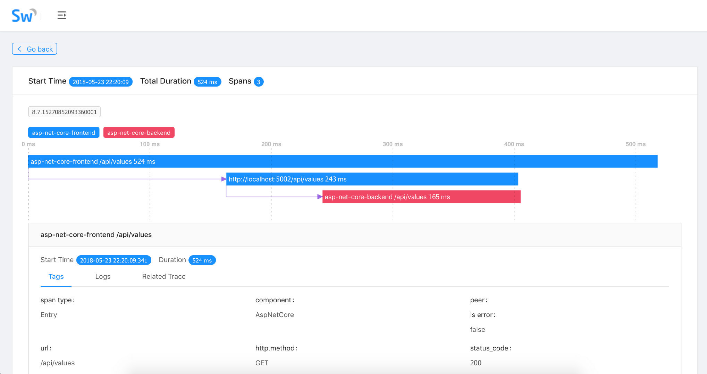

<!doctype html>
<html lang="en" class="no-js">
  <head>
    <meta charset="utf-8">
<meta name="viewport" content="width=device-width, initial-scale=1, shrink-to-fit=no">
<meta name="twitter:site" content="skywalking.apache.org">
<meta name="twitter:image:src" content="https://skywalking.apache.org/images/skywalking_400x400.png">
<meta property="og:image" content="https://skywalking.apache.org/images/skywalking_400x400.png">

<meta http-equiv="Content-Security-Policy" content="frame-src 'self' https://www.google.com https://app.netlify.com;">

<meta name="generator" content="Hugo 0.80.0" />


<script async src="https://www.googletagmanager.com/gtag/js?id=G-GR8N6PGRJ3"></script>
<script>
  window.dataLayer = window.dataLayer || [];
  function gtag(){dataLayer.push(arguments);};
  gtag('js', new Date());gtag('config', 'G-GR8N6PGRJ3');
</script>
<META NAME="ROBOTS" CONTENT="INDEX, FOLLOW">
<link rel="stylesheet" href="//at.alicdn.com/t/c/font_3007530_pvozs1rz2wn.css">


<link rel="apple-touch-icon" sizes="180x180" href="/favicons/apple-touch-icon.png">
<link rel="icon" type="image/png" sizes="32x32" href="/favicons/favicon-32x32.png">
<link rel="icon" type="image/png" sizes="16x16" href="/favicons/favicon-16x16.png">
<link rel="manifest" href="/favicons/site.webmanifest">
<link rel="mask-icon" href="/favicons/safari-pinned-tab.svg" color="#5bbad5">
<meta name="msapplication-TileColor" content="#da532c">
<meta name="theme-color" content="#ffffff">

<title>Apache SkyWalking 为.NET Core带来开箱即用的分布式追踪和应用性能监控 | Apache SkyWalking</title><meta property="og:title" content="Apache SkyWalking 为.NET Core带来开箱即用的分布式追踪和应用性能监控" />
<meta property="og:description" content="SkyWalking .NET Core SDK 现已可用。" />
<meta property="og:type" content="article" />
<meta property="og:url" content="/zh/2018-05-24-skywalking-net/" />
<meta property="article:published_time" content="2018-05-24T00:00:00+00:00" />
<meta property="article:modified_time" content="2024-02-19T22:02:37-05:00" />
<meta itemprop="name" content="Apache SkyWalking 为.NET Core带来开箱即用的分布式追踪和应用性能监控">
<meta itemprop="description" content="SkyWalking .NET Core SDK 现已可用。">
<meta itemprop="datePublished" content="2018-05-24T00:00:00+00:00" />
<meta itemprop="dateModified" content="2024-02-19T22:02:37-05:00" />
<meta itemprop="wordCount" content="142">


<meta itemprop="keywords" content="" />
<meta name="twitter:card" content="summary"/>
<meta name="twitter:title" content="Apache SkyWalking 为.NET Core带来开箱即用的分布式追踪和应用性能监控"/>
<meta name="twitter:description" content="SkyWalking .NET Core SDK 现已可用。"/>


<link rel="preload" href="/scss/main.min.592235942cb3c9f3dd697382a4e7a1fad8e1c182dad2841bdce6b43b4a346ae8.css" as="style">
<link href="/scss/main.min.592235942cb3c9f3dd697382a4e7a1fad8e1c182dad2841bdce6b43b4a346ae8.css" rel="stylesheet" integrity="">


<link rel="stylesheet" href="/css/docSearch.css" />


<script src="/js/jquery-3.6.0.min.js"></script>


    <title>Apache SkyWalking 为.NET Core带来开箱即用的分布式追踪和应用性能监控 | Apache SkyWalking</title>
  </head>
  <body class="td-page td-blog">
    <header>
      
<nav class="js-navbar-scroll navbar navbar-expand  flex-column flex-md-row td-navbar">
    <div class="sidebar-button">
      <i class="iconfont icon-menu"></i>
    </div>
    <a class="navbar-brand" href="/">
        <span class="navbar-logo"></span> 
    </a>
    <div class="td-navbar-nav-scroll navbar-nav-wrapper" id="navigation">
        <ul class="navbar-nav mt-lg-0">
             
            
            
            <li class="nav-item mr-3 mb-lg-0">
				
				
				
				
				<a class="nav-link" href="/docs" ><span>Projects and Docs</span></a>
			</li>
            
            
            
            
            <li class="nav-item mr-3 mb-lg-0">
				
				
				
				
				<a class="nav-link" href="/events" ><span>Events</span></a>
			</li>
            
            
            
            
            <li class="nav-item mr-3 mb-lg-0">
				
				
				
				
				<a class="nav-link" href="/blog" ><span>Blogs</span></a>
			</li>
            
            
            
            
            <li class="nav-item mr-3 mb-lg-0">
				
				
				
				
				<a class="nav-link" href="/downloads" ><span>Downloads</span></a>
			</li>
            
            
            
            
            <li class="nav-item mr-3 mb-lg-0">
				
				
				
				
				<a class="nav-link" href="/team" ><span>Team</span></a>
			</li>
            
            
            
            
            <li class="nav-item mr-3 mb-lg-0">
				
				
				
				
				<a class="nav-link" href="/users" ><span>Users</span></a>
			</li>
            
            
            
            
            
            <li class="nav-item mr-3 mb-lg-0">
                <span class="link dropdown blog">
                    <a class="link-name nav-link dropdown-toggle" href="#" role="button" data-toggle="dropdown" aria-haspopup="true" aria-expanded="false">中文资料</a>
                    <div class="dropdown-menu">
                        <a class="dropdown-item" href="/zh/">博客</a>
                        <a class="dropdown-item" href="https://space.bilibili.com/390683219" target="_blank" rel="noopener noreferrer">
                            B站
                        </a>
                        <a class="dropdown-item" href="https://juejin.cn/user/13673577331607" target="_blank" rel="noopener noreferrer">
                            掘金
                        </a>
                    </div>
                </span>
            </li>

            
			
        </ul>
    </div>
    <div class="navbar-nav d-none d-lg-block search-input-box">
         
            
        
            
        
            
        
            
        
            
        
            
        
            
            <span class="link dropdown">
                <a class="link-name dropdown-toggle" href="#" role="button" data-toggle="dropdown" aria-haspopup="true" aria-expanded="false">
                    Links
                </a>
                <div class="dropdown-menu">
                    
                    <a class="dropdown-item" href="http://www.apache.org/">Apache Software Foundation</a> 
                    <a class="dropdown-item" href="https://github.com/apache/skywalking/issues">GitHub Issue Tracker</a> 
                    <a class="dropdown-item" href="https://github.com/apache/skywalking/discussions">Discussion</a> 
                    <a class="dropdown-item" href="https://lists.apache.org/list.html?dev@skywalking.apache.org">Dev Mailing List</a> 
                    <a class="dropdown-item" href="https://cwiki.apache.org/confluence/display/SKYWALKING/Home">WIKI</a> 
                    <a class="dropdown-item" href="http://www.apache.org/licenses/">License</a> 
                    <a class="dropdown-item" href="http://www.apache.org/events/current-event">Apache Events</a> 
                    <a class="dropdown-item" href="http://www.apache.org/security/">Security</a> 
                    <a class="dropdown-item" href="http://www.apache.org/foundation/sponsorship.html">Sponsor and Donate</a> 
                    <a class="dropdown-item" href="http://www.apache.org/foundation/thanks.html">Thanks</a> 
                    <a class="dropdown-item" href="https://apache.org/foundation/policies/privacy.html">Privacy</a> 
                </div>
            </span>
            
        
        
<div id="docsearch"></div>


    </div>
</nav>

    </header>
    <div class="container-fluid td-outer">
      <div class="td-main">
        <div class="row container container-center">
          <main class="col-12 col-md-12 col-xl-10 pl-md-4 pr-md-4" role="main">
            
<div class="td-content">
	<h1>Apache SkyWalking 为.NET Core带来开箱即用的分布式追踪和应用性能监控</h1>
	<div class="lead">SkyWalking .NET Core SDK 现已可用。</div>
	<div class="td-byline mb-4">
		By <b>刘浩扬（SkyWalking .NET Core 探针维护者）</b> |
		<time datetime="2018-05-24" class="text-muted">Thursday, May 24, 2018</time>

	    
		<p class="mt-1 tags-box">
			<i class="iconfont icon-tags"></i>Tags |
			
			<span> <a href="/zh_tags/dotnetcore">DotNetCore</a></span>
			
			<span> <a href="/zh_tags/agent">Agent</a></span>
			
		</p>
		

	</div>
	<p>在大型网站系统设计中，随着分布式架构，特别是微服务架构的流行，我们将系统解耦成更小的单元，通过不断的添加新的、小的模块或者重用已经有的模块来构建复杂的系统。随着模块的不断增多，一次请求可能会涉及到十几个甚至几十个服务的协同处理，那么如何准确快速的定位到线上故障和性能瓶颈，便成为我们不得不面对的棘手问题。</p>
<p>为解决分布式架构中复杂的服务定位和性能问题，Google 在论文<a href="http://research.google.com/pubs/pub36356.html">《Dapper, a Large-Scale Distributed Systems Tracing Infrastructure》</a>中提出了分布式跟踪系统的设计和构建思路。在这样的背景下，<a href="https://github.com/apache/incubator-skywalking">Apache SkyWalking</a> 创建于 2015 年，参考 Dapper 论文实现分布式追踪功能，并逐渐进化为一个完整功能的 <a href="https://en.wikipedia.org/wiki/Application_performance_management">Application Performance Management</a> 系统，用于追踪、监控和诊断大型分布式系统，尤其是容器和云原生下的微服务系统。</p>
<p>今年初我在尝试使用.NET Core 构建分布式追踪系统 <a href="https://github.com/liuhaoyang/butterfly">Butterfly</a> 时接触到 SkyWalking 团队，开始和 SkyWalking 团队合作探索 SkyWalking 对.NET Core 的支持，并于 4 月发布 SkyWalking .NET Core 探针的 <a href="https://www.oschina.net/news/95324/apache-skywalking-apm-support-dot-net-core">第一个版本</a>，同时我也有幸加入 SkyWalking 团队共同进行 SkyWalking 在多语言生态的推动。在.NET Core 探针 v0.1 版本发布之后，得到了一些同学的<a href="https://www.jianshu.com/p/3ddd986c7581">尝鲜使用</a>，也得到诸多改进的建议。经过几周的迭代，SkyWalking .NET Core 探针于今天发布 v0.2 release，在 v0.1 的基础上增加了稳定性和 HttpClient 及数据库驱动的追踪支持。</p>
<p>在使用 SkyWalking 对.NET Core 应用追踪之前，我们需要先部署 SkyWalking Collector 收集分析 Trace 和 Elasticsearch 作为 Trace 数据存储。SkyWalking 支持 5.x 的 ES，所以我们需要下载安装对应版本的 ES，并配置 ES 的 <code>cluster.name</code> 为 <code>CollectorDBCluster</code>。然后部署 SkyWalking 5.0 beta 或更高版本 (下载地址:http://skywalking.apache.org/downloads/)。更详细的 Collector 部署文档，请参考 <a href="https://github.com/apache/incubator-skywalking/blob/master/docs/en/Deploy-backend-in-standalone-mode.md">Deploy-backend-in-standalone-mode</a> 和 <a href="https://github.com/apache/incubator-skywalking/blob/master/docs/en/Deploy-backend-in-cluster-mode.md">Deploy-backend-in-cluster-mode</a>。</p>
<p>最后我们使用示例项目来演示在.NET Core 应用中使用 SkyWalking 进行追踪和监控，克隆 SkyWalking-NetCore 项目到本地：</p>
<div class="highlight"><pre style="background-color:#fff;-moz-tab-size:4;-o-tab-size:4;tab-size:4"><code class="language-bash" data-lang="bash">git clone https://github.com/OpenSkywalking/skywalking-netcore.git
</code></pre></div><p>进入 skywalking-netcore 目录：</p>
<div class="highlight"><pre style="background-color:#fff;-moz-tab-size:4;-o-tab-size:4;tab-size:4"><code class="language-bash" data-lang="bash"><span style="color:#0086b3">cd</span> skywalking-netcore
</code></pre></div><p>还原 nuget package：</p>
<div class="highlight"><pre style="background-color:#fff;-moz-tab-size:4;-o-tab-size:4;tab-size:4"><code class="language-bash" data-lang="bash">dotnet restore
</code></pre></div><p>启动示例项目：</p>
<div class="highlight"><pre style="background-color:#fff;-moz-tab-size:4;-o-tab-size:4;tab-size:4"><code class="language-bash" data-lang="bash">dotnet run -p sample/SkyWalking.Sample.Backend
dotnet run -p sample/SkyWalking.Sample.Frontend
</code></pre></div><p>访问示例应用：</p>
<p>打开 SkyWalking WebUI 即可看到我们的应用监控面板 <a href="http://localhost:8080/">http://localhost:8080</a></p>
<p>Dashboard 视图</p>
<p></p>
<p>TopologyMap 视图</p>
<p></p>
<p>Application 视图</p>
<p></p>
<p>Trace 视图</p>
<p></p>
<p>TraceDetails 视图</p>
<p></p>
<h2 id="github">GitHub</h2>
<ul>
<li>SkyWalking Github Repo：<a href="https://github.com/apache/incubator-skywalking/">https://github.com/apache/incubator-skywalking</a></li>
<li>SkyWalking-NetCore Github Repo：https://github.com/OpenSkywalking/skywalking-netcore</li>
</ul>

	

	<ul class="list-unstyled d-flex justify-content-between align-items-center mb-0 pt-5">
  <li>
    <a  class="btn btn-primary  disabled"><span class="mr-1">←</span> Previous</a>
  </li>
    <a href="/zh/2018-12-18-apache-skywalking-5-0-userguide/" class="btn btn-primary ">Next <span class="ml-1">→</span></a>
  </li>
</ul>

</div>


          </main>
          <div class="toc d-none d-xl-block d-md-none col-xl-2 td-toc d-print-none">
            <div class="tags-wrapper">
    <div class="font-weight-bold post-meta ">
        <i class="iconfont icon-tags pr-1" aria-hidden="true"></i>
        Tags
    </div>
    <ul class="tags-box">
        
        <li>
            <a href="/zh_tags/agent/" class="tag-link">Agent</a>
            <span class="count">3</span>
        </li>
        
        <li>
            <a href="/zh_tags/apache-shenyu-incubating/" class="tag-link">Apache ShenYu (incubating)</a>
            <span class="count">1</span>
        </li>
        
        <li>
            <a href="/zh_tags/conference/" class="tag-link">Conference</a>
            <span class="count">9</span>
        </li>
        
        <li>
            <a href="/zh_tags/course/" class="tag-link">Course</a>
            <span class="count">1</span>
        </li>
        
        <li>
            <a href="/zh_tags/development/" class="tag-link">Development</a>
            <span class="count">3</span>
        </li>
        
        <li>
            <a href="/zh_tags/dotnetcore/" class="tag-link">DotNetCore</a>
            <span class="count">1</span>
        </li>
        
        <li>
            <a href="/zh_tags/ebpf/" class="tag-link">eBPF</a>
            <span class="count">1</span>
        </li>
        
        <li>
            <a href="/zh_tags/elasticsearch/" class="tag-link">ElasticSearch</a>
            <span class="count">1</span>
        </li>
        
        <li>
            <a href="/zh_tags/java/" class="tag-link">Java</a>
            <span class="count">2</span>
        </li>
        
        <li>
            <a href="/zh_tags/logging/" class="tag-link">Logging</a>
            <span class="count">1</span>
        </li>
        
        <li>
            <a href="/zh_tags/metrics/" class="tag-link">Metrics</a>
            <span class="count">1</span>
        </li>
        
        <li>
            <a href="/zh_tags/observability/" class="tag-link">Observability</a>
            <span class="count">1</span>
        </li>
        
        <li>
            <a href="/zh_tags/open-source-contribution/" class="tag-link">Open Source Contribution</a>
            <span class="count">4</span>
        </li>
        
        <li>
            <a href="/zh_tags/open-source-promotion-plan/" class="tag-link">Open Source Promotion Plan</a>
            <span class="count">2</span>
        </li>
        
        <li>
            <a href="/zh_tags/performance/" class="tag-link">Performance</a>
            <span class="count">1</span>
        </li>
        
        <li>
            <a href="/zh_tags/profiling/" class="tag-link">Profiling</a>
            <span class="count">1</span>
        </li>
        
        <li>
            <a href="/zh_tags/release-blog/" class="tag-link">Release Blog</a>
            <span class="count">3</span>
        </li>
        
        <li>
            <a href="/zh_tags/service-mesh/" class="tag-link">Service Mesh</a>
            <span class="count">1</span>
        </li>
        
        <li>
            <a href="/zh_tags/shardingsphere/" class="tag-link">ShardingSphere</a>
            <span class="count">1</span>
        </li>
        
        <li>
            <a href="/zh_tags/shardingsphere-proxy/" class="tag-link">ShardingSphere-proxy</a>
            <span class="count">1</span>
        </li>
        
        <li>
            <a href="/zh_tags/skywalking/" class="tag-link">SkyWalking</a>
            <span class="count">1</span>
        </li>
        
        <li>
            <a href="/zh_tags/source-code/" class="tag-link">Source Code</a>
            <span class="count">1</span>
        </li>
        
        <li>
            <a href="/zh_tags/tracing/" class="tag-link">Tracing</a>
            <span class="count">3</span>
        </li>
        
        <li>
            <a href="/zh_tags/use-case/" class="tag-link">Use Case</a>
            <span class="count">3</span>
        </li>
        
        <li>
            <a href="/zh_tags/user-manual/" class="tag-link">User Manual</a>
            <span class="count">16</span>
        </li>
        
        <li>
            <a href="/zh_tags/video/" class="tag-link">Video</a>
            <span class="count">11</span>
        </li>
        
        <li>
            <a href="/zh_tags/web-ui/" class="tag-link">Web UI</a>
            <span class="count">1</span>
        </li>
        
    </ul>
</div>


            


<div class="td-page-meta ml-2 pb-1 pt-2 mb-0">


</div>


<script>
  $(function () {
    var $toc = $("#TableOfContents");
    if (!$toc || !$toc.length) {
      return;
    }
    var top = $toc.offset().top;
    $(window).on("scroll", debounce(setTop, 100))
    $(window).on("scroll", debounce(addActive, 30))

    function addActive() {
      var scrollValue = $(window).scrollTop();
      var topEle = null;
      $.each($('main h1, main h2, main h3'), function (index, item) {
        if ($(item).offset().top - 70 > scrollValue) {
          return
        }
        if (!topEle) {
          topEle = item
        } else if ($(item).offset().top >= $(topEle).offset().top) {
          topEle = item
        }
        if (topEle) {
          var id = $(item).attr('id');
          $toc.find('a').removeClass("active").end().find('a[href="' + '#' + id + '"]').addClass("active")
        }
      })
    }

    function setTop() {
      var scrollValue = $(window).scrollTop();
      if (scrollValue >= top - 70) {
        $toc.addClass('fixed')
      } else {
        $toc.removeClass('fixed')
      }
    }

    function debounce(fn, wait) {
      var timeout = null;
      return function () {
        clearTimeout(timeout);
        timeout = setTimeout(() => {
          fn.apply(this, arguments);
        }, wait);
      };
    }
  })

</script>


          </div>
        </div>
      </div>
      
<footer class="py-5 sky-row">
  <div class="container-fluid text-center">
    <div class="">
        
        
        
<ul class="list-inline mb-0">
  
  <li class="list-inline-item mx-2 h3" data-toggle="tooltip" data-placement="top" title="Twitter" aria-label="Twitter">
    <a class="text-color" target="_blank" href="https://twitter.com/asfskywalking">
      <i class="iconfont icon-twitter"></i>
    </a>
  </li>
  
  <li class="list-inline-item mx-2 h3" data-toggle="tooltip" data-placement="top" title="Slack" aria-label="Slack">
    <a class="text-color" target="_blank" href="http://s.apache.org/slack-invite">
      <i class="iconfont icon-slack"></i>
    </a>
  </li>
  
  <li class="list-inline-item mx-2 h3" data-toggle="tooltip" data-placement="top" title="Mailing list" aria-label="Mailing list">
    <a class="text-color" target="_blank" href="https://lists.apache.org/list.html?dev@skywalking.apache.org">
      <i class="iconfont icon-email"></i>
    </a>
  </li>
  
  <li class="list-inline-item mx-2 h3" data-toggle="tooltip" data-placement="top" title="GitHub" aria-label="GitHub">
    <a class="text-color" target="_blank" href="https://github.com/apache/skywalking">
      <i class="iconfont icon-github"></i>
    </a>
  </li>
  
</ul>

        
        
    </div>
    <div class="">

        <small class="text-color">&copy; 2017 - 2024 The Apache Software Foundation All Rights Reserved</small>
        
	
    </div>
    <div class="">
      <small class="text-color mt-4">Apache SkyWalking, SkyWalking, Apache, the Apache feather logo, and the Apache SkyWalking project logo are either registered trademarks or trademarks of the Apache Software Foundation.</small>
    </div>
  </div>
</footer>


    </div>
    


    
<div id="popup">
    <div class="mask">
        
    </div>
</div>

    <div class="sidebar-mask"></div>
<div class="sidebar">
    <nav class="nav-links">
        <div class="nav-item"><a href="/docs/" class="nav-link">Projects and Documentation</a></div>
        <div class="nav-item"><a href="/events/" class="nav-link">Events</a></div>
        <div class="nav-item"><a href="/blog/" class="nav-link router-link-exact-active router-link-active">Blog</a>
        </div>
        <div class="nav-item"><a href="/downloads/" class="nav-link">Downloads</a></div>
        <div class="nav-item"><a href="/team/" class="nav-link">Team</a></div>
        <div class="nav-item"><a href="/users/" class="nav-link">Users</a></div>
        <div class="nav-item">
            <div class="dropdown-wrapper open">
                <a class="dropdown-title"><span>中文资料</span>
                    <span class="arrow down"></span>
                </a>
                <ul class="nav-dropdown">
                    <li class="dropdown-item">
                        <a href="/zh/" class="nav-link external">博客</a>
                    </li>
                    <li class="dropdown-item">
                        <a href="https://space.bilibili.com/390683219" target="_blank"
                           rel="noopener noreferrer" class="nav-link external">B站</a>
                    </li>
                    <li class="dropdown-item">
                        <a href="https://juejin.cn/user/13673577331607" target="_blank"
                           rel="noopener noreferrer" class="nav-link external">掘金</a>
                    </li>
                </ul>
            </div>
        </div>
        <div class="nav-item">
            <div class="dropdown-wrapper open">
                <a class="dropdown-title">
                    <span>Links</span>
                    <span class="arrow down"></span>
                </a>
                <ul class="nav-dropdown">
                    <li class="dropdown-item">
                        <a href="http://www.apache.org/" target="_blank"
                           rel="noopener noreferrer" class="nav-link external">
                            Apache Software Foundation
                        </a>
                    </li>
                    <li class="dropdown-item">
                        <a href="https://github.com/apache/skywalking/issues"
                           target="_blank" rel="noopener noreferrer"
                           class="nav-link external">
                            GitHub Issue Tracker
                        </a>
                    </li>
                    <li class="dropdown-item">
                        <a href="https://lists.apache.org/list.html?dev@skywalking.apache.org" target="_blank"
                           rel="noopener noreferrer" class="nav-link external">
                            Dev Mailing List
                        </a>
                    </li>
                    <li class="dropdown-item">
                        <a href="http://www.apache.org/licenses/" target="_blank"
                           rel="noopener noreferrer" class="nav-link external">
                            License
                        </a>
                    </li>
                    <li class="dropdown-item">
                        <a href="http://www.apache.org/events/current-event"
                           target="_blank" rel="noopener noreferrer"
                           class="nav-link external">
                            Apache Events
                        </a>
                    </li>
                    <li class="dropdown-item">
                        <a href="http://www.apache.org/security/" target="_blank"
                           rel="noopener noreferrer" class="nav-link external">
                            Security
                        </a>
                    </li>
                    <li class="dropdown-item">
                        <a href="http://www.apache.org/foundation/sponsorship.html"
                           target="_blank" rel="noopener noreferrer"
                           class="nav-link external">
                            Sponsorship and Donate
                        </a>
                    </li>
                    <li class="dropdown-item">
                        <a href="http://www.apache.org/foundation/thanks.html"
                           target="_blank" rel="noopener noreferrer"
                           class="nav-link external">
                            Thanks
                        </a>
                    </li>
                </ul>
            </div>
        </div>
    </nav>
</div>

    <script src="/js/bootstrap.bundle.min.js"></script>

<script src="https://cdn.jsdelivr.net/npm/@docsearch/js@3"></script>


<script src="/js/main.min.dc00f5ca911ee5aa105ea6de6b3b7e8d8169ba5a3bf156b1fcfe23dfe3e62b0a.js" integrity="sha256-3AD1ypEe5aoQXqbeazt&#43;jYFpulo78Vax/P4j3&#43;PmKwo=" crossorigin="anonymous"></script>


<script src="/js/mermaid.min.js"></script>
<script>
    window.onload = () => mermaid.init(undefined, ".language-mermaid");
</script>


<script defer
src="https://widget.kapa.ai/kapa-widget.bundle.js"
data-website-id="8a08392b-9c4d-4816-8bc4-f93e0ecdd2a7"
data-project-name="SkyWalking"
data-project-color="#2B74B8"
data-button-text="Ask AI"
data-search-mode-enabled="true"
data-modal-open-on-command-k="true"
data-modal-disclaimer="The AI supports multiple languages, but it may not be accessible in China, a proxy is required."
data-project-logo="https://miro.medium.com/v2/resize:fit:2400/0*kmS-5BQ8ShAhZ_F4.jpg"
data-modal-example-questions="What is Apache SkyWalking?,How to deploy SkyWalking?,How to inject agents non-intrusively?,How to setup trace sampling?"
data-button-position-top=""
data-button-position-right="20px"
data-button-position-bottom="200px"
data-button-position-left=""
></script>


  </body>
</html>
